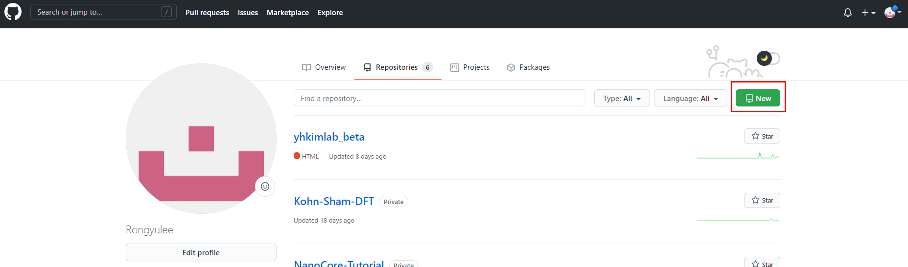

Create new repository
0. 원격 저장소 및 로컬 저장소의 의미
- 중앙 원격(remote) 저장소 여러 명이 같은 프로젝트를 관리하는 데 사용하는 그룹 계정의 중립된 원격 저장소. Organizatoin의 사용자와 저장소는 팀으로 관리되고 저장소의 권한 설정도 팀으로 관리한다.
- 개인 원격(remote) 저장소 remote repository 라고 불린다. 파일이 GitHub 전용 서버에서 관리되는 원격 저장소.
- 로컬(local) 저장소 local repository 라고 불린다. 내 PC에 파일이 저장되는 개인 전용 저장소, 지역 저장소.
1. 원격 저장소 만들기 (github)
(1) Sign in github and create new remote repository
Github[Link]에 접속하여 다음과 같이 자신의 저장소를 생성할 수 있다.


*Generating a new SSH key and adding it to the ssh-agent [Link]
2. 로컬 저장소 만들기
(1) Create a local repository
터미널에서 자신의 원하는 디렉터리 이동한 후 아래의 명령어를 입력한다.
명령어를 수행하면 해당 디렉토리에 .git 파일이 생성되는 것을 확인 할 수 있다.
(2) Add source files into the repository
로컬 저장소에서 다음과 같은 명령어를 통해 로컬 저장소의 파일들을 스테이징 영역에 추가할 수 있다.
스테이징 영역에 추가된 파일을 다음과 같은 명령어를 통해 확인할 수 있다.
마지막으로 다음과 같은 명령어로 로컬 저장소에 스테이징 영역에 저장된 변경 내역을 확정 지을 수 있다.
확정된 commit 내역 확인
(3) Add remote to local repository (github)
.git 파일이 생성된 로컬 저장소와 이전에 github를 통해 만든 원격 저장소를 연결하기 위해서 다음과 같은 명령어를 통해 origin의 이름으로 원격 저상소를 등록한다.

(4) Push local branch to remote branch
로컬 저장소에 저장된
(Additional) Create a local repository from external remote repository
이미 원격 저장소에서 관리되고 있는 외부 프로젝트를 개인의 저장소로 가져오는 경우에는 다음과 같은 명령어를 수행한다.
진행이 된 디렉토리에 원격 저장소와 동일한 이름의 디렉토리 생성된 것을 확인할 수 있다.